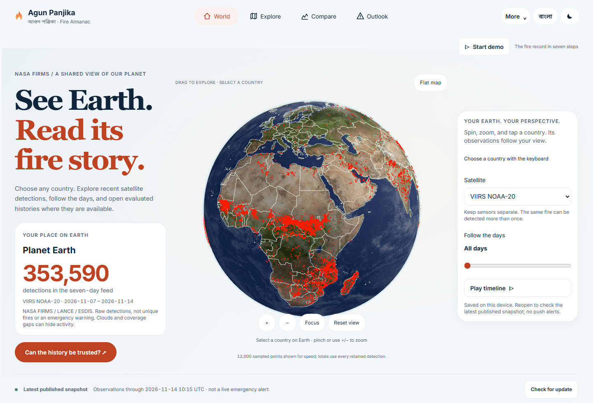
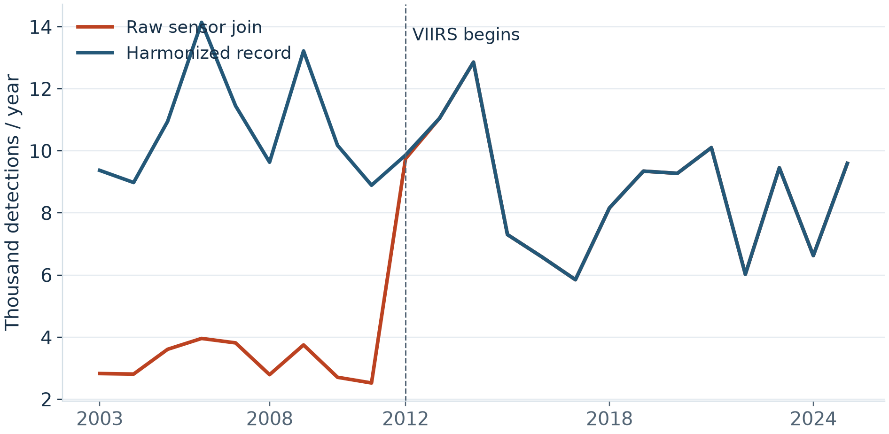
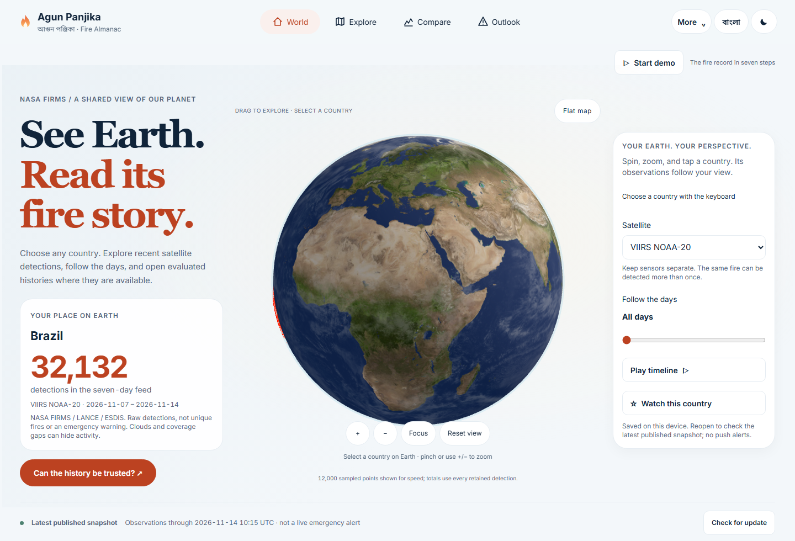
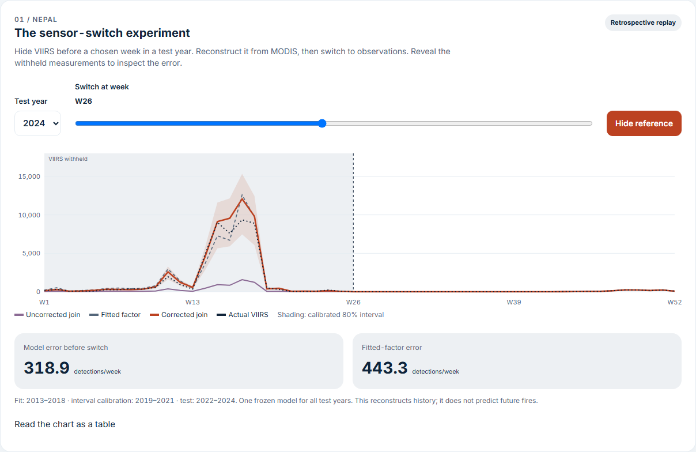
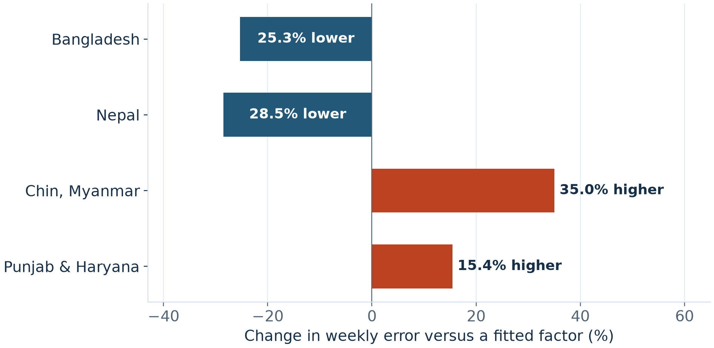
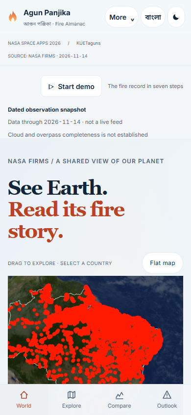

A fire history you can inspect.
We're Team KUETaguns.


Explore recent NASA observations worldwide.
242 countries and territories · separate satellite feeds · dated snapshots



Save your country on your phone and share dated evidence for better monitoring.
polymathicx.github.io/Agun-Panjika
